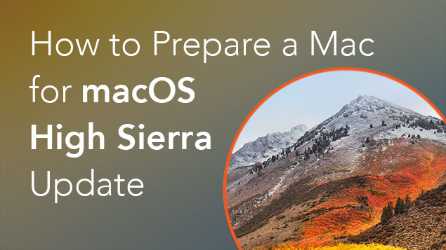

A Google baixou as cortinas e apresentou hoje (8) o novo Android P, ainda sem nome oficial, como de praxe. A nova versão do sistema operacional mais usado em todo o planeta chega com algumas novidades interessantes e tem um foco especial em recursos que se adaptam à utilização do usuário, deixando tudo mais inteligente, e também na navegação por gestos. Além disso, a Google parece ter pensado na melhor maneira de proporcionar um bem-estar digital aos seus usuários: o novo Android é o primeiro a trazer consigo uma função personalizável para limitar o acesso a um determinado aplicativo e é possível definir um tempo máximo diário de uso, por exemplo. Ao que tudo indica, a Google investiu pesado em mudanças na interface e não apenas em ajustes internos, o que é muito bom. Confira todas as novidades do novo sistema operacional, que será oficialmente lançado apenas no segundo semestre deste ano.
A segunda novidade adaptativa do Android P é chamada de App Actions. Uma espécie de ampliação das predições de apps incluída no ano passado (aquelas sugestões no topo da gaveta de aplicativos), a novidade inclui acesso rápido a funções específicas dentro de apps instalados no aparelho. Assim, isso pode se traduzir em um contato que você costuma ligar com frequência ou o seu artista mais ouvido do Spotify (os dois exemplos usados pela Google).
Conforme anunciado há algumas semanas, a Apple acaba de lançar o macOS High Sierra 10.13 para todos os usuários. Sua compilação final é a 17A365. Assim como os outros três sistemas operacionais da Apple liberados na semana passada [iOS 11, watchOS 4 e tvOS 11], o macOS High Sierra foi apresentado em junho, na Worldwide Developers Conference (WWDC) 2017, e como o seu nome já indica ele traz bons aprimoramentos em cima do macOS Sierra.
Lembrem-se da palavrinha mágica: backup. A fase de testes de sistemas operacionais como o macOS é longa principalmente para evitar problemas graves no processo de atualização, mas como nenhum software é perfeito (e você corre riscos como até mesmo faltar energia no meio do processo), é bom se precaver.
Seguindo os 9 meses do período de depreciação, o suporte para arquitetura i686 efetivamente acaba hoje. No começo de Novembro, os pacotes i686 serão removidos dos nossos mirrors e depois dos arquivos de pacotes. Para usuários que não conseguem atualizar seu hardware para x86_64, uma alternativa é um fork mantido pela comunidade chamado Arch Linux 32. Veja o website para detalhes na migração de instalações existentes.